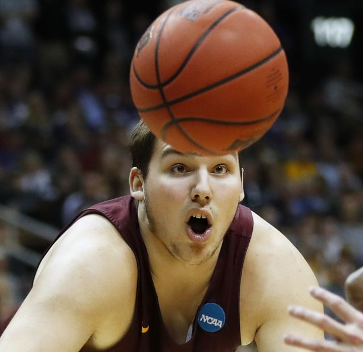

Thursday, March 17
12:15 - 11 Michigan vs 6 Colorado St. --- (Josh)
12:40 - 13 South Dakota St. vs 4 Providence --- (Alex)
1:45 - 9 Memphis vs 8 Boise St.
2:00 - 16 Norfolk St. vs 1 Baylor --- (Adam, Alex, Lloyd)
2:45 - 14 Longwood vs 3 Tennessee --- (Adam, Bryan, Lloyd)
3:10 - 12 Richmond vs 5 Iowa --- (Bryan, Farach)
4:15 - 16 Georgia St. vs 1 Gonzaga --- (Adam, Bryan, Lloyd, Farach)
4:30 - 9 Marquette vs 8 North Carolina
6:50 - 12 New Mexico St. vs 5 Connecticut --- (Malatack)
7:10 - 15 Saint Peter's vs 2 Kentucky --- (Bryan, Alex, Josh)
7:20 - 12 Indiana vs 5 Saint Mary's
7:27 - 9 Creighton vs 8 San Diego St.
9:20 - 13 Vermont vs 4 Arkansas --- (Alex)
9:40 - 10 San Francisco vs 7 Murray St.
9:50 - 13 Akron vs 4 UCLA --- (Malatack, Adam, Farach)
9:57 - 16 Texas Southern vs 1 Kansas --- (Bryan, Lloyd, Rob)
Player Pool Trivia
Question 1: In 2019, Carsen Edwards shattered whose player pool record for most points in a four-game tournament?
Question 2: In how many seasons has the first overall pick been outscored by the 64th pick?
Question 3: Which player pool participant is most likely to have been among the January 6th insurrectionists?